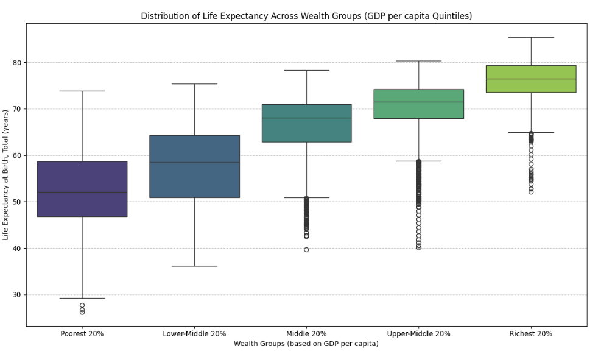
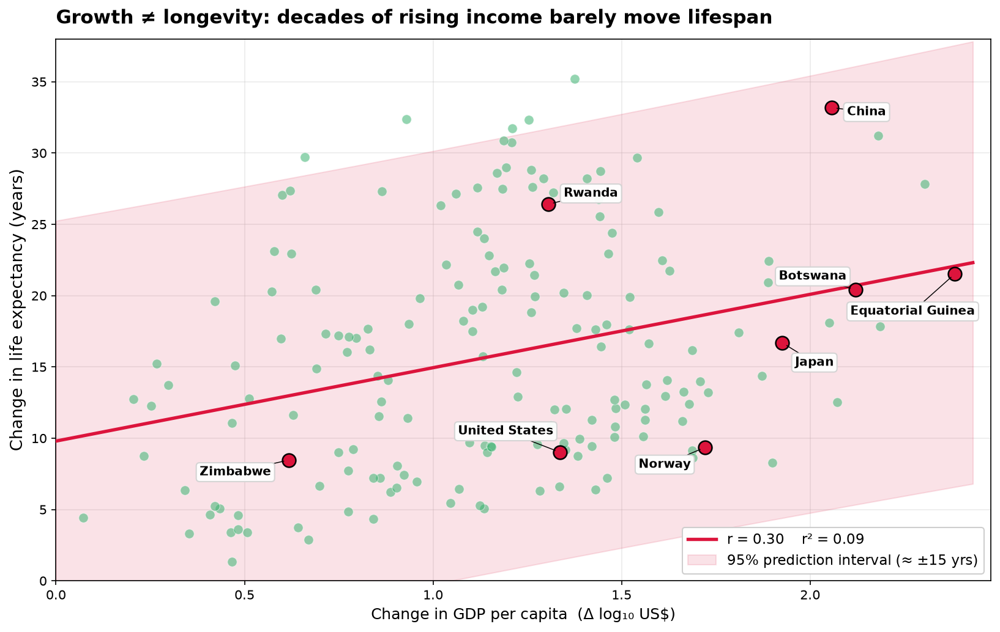

Proposition: National wealth is a reliable predictor of better health.
Our project investigated the relationship between national wealth(GDP), and population health(life expectancy at birth). We used the Human Development Indicators dataset(1960–2020) for investigation. We designed two visualizations to argue both for and against the proposition. The supporting visualizations emphasize the broad positive association between GDP and life expectancy, while the opposing one showed the uncertainty in predicting health using national wealth.
FOR the Proposition

This boxplot divides observations into five wealth groups based on GDP per capita, from the poorest 20% to the richest 20%. The median life expectancy rises across these groups, making the relationship appear consistent and systematic.
Design Decisions and Rationale:
- 1. Grouping observations(+1): We grouped GDP per capita into five wealth categories, which transforms a continuous variable into an ordered comparison. This makes the increase in median life expectancy easier to recognize than in a crowded scatterplot. However, the transformation simplifies boundaries between groups and obscures differences between countries within each group.
- 2. Emphasizing median life expectancy (+1.5): The boxes and their horizontal median lines direct attention toward the typical life expectancy of each wealth group. The increasing medians support the proposition clearly, but medians alone do not show whether individual observations in poorer and richer groups overlap substantially.
- 3. Showing distributions instead of averages (+2): The boxplots show medians, quartiles, and outliers, providing more information than a chart of five averages would. This works well because readers can see both the upward trend and the variation around it, although the number of individual observations represented by each box is not immediately apparent.
- 4. Ordered color progression (+1): The gradual change in color reinforces the progression from the poorest group to the richest group. This improves visual organization and helps readers follow the comparison, although the colors may subtly imply a smooth progression even when the underlying distributions overlap.
- 5. Suppressing individual country identities (-1): By summarizing observations within five groups, the chart removes the identities and specific values of individual countries. This is effective for emphasizing the overall trend, but it hides counterexamples that might weaken the proposition. An alternative would be to supplement the chart with labeled countries or a separate view of within-group variation.
AGAINST the Proposition

This scatterplot compares changes in GDP per capita with changes in life expectancy within individual countries over time. The weak correlation (r = 0.30) and low R² (0.09), combined with the wide prediction interval, suggest that income growth alone is not a reliable predictor of how much life expectancy will improve.
Design Decisions and Rationale:
- 1. Using within-country changes (+1.5): We compared each country's first-to-last changes in GDP per capita and life expectancy, including countries with at least 25 years of data and at least 25 observations. This directly examines whether income growth predicts life-expectancy growth while reducing the influence of confounders such as geography, institutions, and culture. However, using only the first and last observations ignores changes throughout the intervening years.
- 2. Showing a 95% prediction interval (-0.5): The wide prediction interval shows the uncertainty when predicting changes for individual countries. A prediction interval is appropriate for evaluating predictive reliability, but it is wider than a confidence interval around the regression line and makes the model appear less reliable. Using red for both the interval and regression line further emphasizes this apparent weakness.
- 3. Selecting and labeling specific countries (-1): We labeled China, Equatorial Guinea, Botswana, Japan, the United States, Norway, Rwanda, and Zimbabwe to show examples from different regions and positions in the scatterplot. However, this selection is curated rather than random or exhaustive, which can make the weak relationship appear more universal than it is. Labeling all countries or using a consistent selection rule would reduce this bias.
- 4. Using a strong title (-1.5): The title “Growth ≠ longevity: decades of rising income barely move lifespan” challenges the idea that national wealth reliably predicts better health. However, the phrase “barely move” overstates the conclusion by downplaying substantial life-expectancy gains in some countries, such as China. A more neutral title would be “Income growth explains little of lifespan change.”
- 5. Showing the full data range and statistical measures (+1): We displayed the full range of changes, kept both axes starting at zero, and reported r and R². These choices allow readers to see the variation among countries and evaluate the model's predictive strength. However, the wide range of values and prediction interval may visually dominate the chart, drawing attention away from countries that experienced substantial improvements.
Final Reflection
Across both panels, the hardest part was not computing the statistics but deciding how much context to leave in. The FOR boxplot was easy to make persuasive because binning continuous GDP data in quintiles forces a clean, upward staircase. However, that coarse grouping hides the massive within-group variance and the diminishing returns at higher incomes. The AGAINST scatterplot exploits this by examining raw, within-country changes, revealing that income growth is a surprisingly weak predictor of lifespan improvement. We were surprised by how much the title and annotation choices changed the perceived strength of the same r = 0.30 relationship.
Ethical analysis and visualization, for us, was less about a binary “honest/deceptive” label and more about whether the reader can recover the analytic choices that produced the impression. Acceptable persuasive choices include documented transformations, appropriate statistical intervals, full axes, and titles that state the comparison. Misleading choices include hiding outliers, coarse binning that erases contradictory points, cherry-picked annotations without disclosure, and causal or absolute language used for associational patterns. The boundary is fuzzy because a legitimate choice—a prediction interval, a raw scale, a within-country delta—can also be rhetorically convenient. Our working rule: if knowing about the choice would change a reader’s conclusion, the transformation should be disclosed in the caption or annotation.